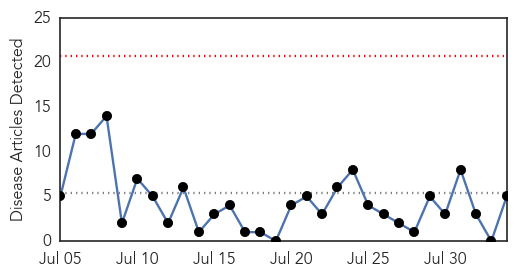

30 Day Trends
Web: 0 alerts, 0 warnings
Twitter: 0 alerts, 0 warnings
Top Articles:
- 0.981
- In Somalia, a wives' tale delays measles treatment
- 0.975
- CDC, WHO, Merck Documents Prove VACCINATED Are Spreading Virus
- 0.957
- DRC: MSF has vaccinated over 287,000 children against measles in four provinces - Democratic Republic of the Congo
- 0.520
- Vaccinations protect us all
- 0.504
- Rhode Island Mandates HPV Vaccine for Girls in 7th Grade
Top Tweets:
-
No tweets found for Aug 03, 2015
Web/News Articles
Tweets